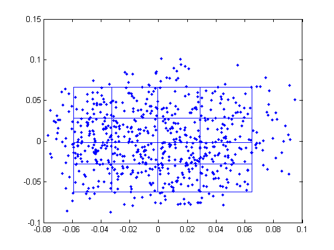
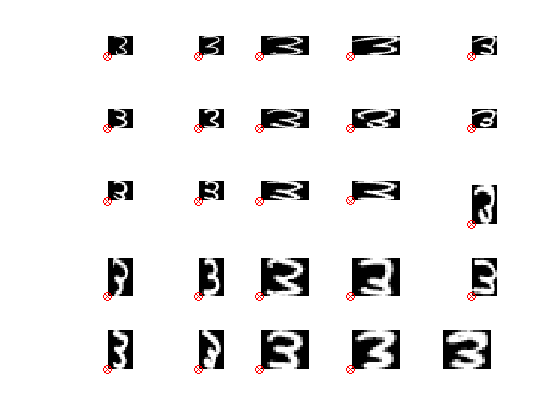

Embed the digit 3 into 2D and sample from the space
Reproduce fig 14.23 from Hastie's book p489
% This file is from pmtk3.googlecode.com if 0 loadData('uspsAll'); % data(1:256, 1:1100, 1:10) c = 3; n = size(data,2); X = double(data(:,:,c))'; % n x 256 figure(3);clf;montageKPM(reshape(X', [16 16 n])) else X = loadData('digits3Htf'); % 658 x 256 - row order, not column! X = reshape(X, [658 16 16]); X = permute(X, [3 2 1]); % 16 x 16 x 658 %figure(3);clf;montageKPM(X) X = reshape(X, [256 658])'; end h = 16; w = 16; % Hastie's book p489 recommends computing quantiles of ui1, ui2 % to compute the grid location to sample represenative images in latent space mu = mean(X); XC = X-repmat(mu,size(X,1),1); [U,S,V] = svd(XC,0); pc = [-U(:,1) -U(:,2)]; % to match fig 14.23 of HTF %pc = U*S; pc = [pc(:,1) pc(:,2)]; pct1 = quantilePMTK(pc(:,1), [0.05 0.25 0.5 0.75 0.95]); pct2 = quantilePMTK(pc(:,2), [0.05 0.25 0.5 0.75 0.95]); fig2 = figure(); fig1 = figure(); plot(pc(:,1), pc(:,2), '.'); hold on for i=1:5 line([pct1(i) pct1(i)], [pct2(1) pct2(end)]); line([pct1(1) pct1(end)], [pct2(i) pct2(i)]); end pct2r = flipud(pct2')'; % top left image corresponds to +ve Z2 for i=1:5 for j=1:5 figure(1); x1 = pct1(j); x2 = pct2r(i); plot(x1, x2, 'rx'); dst = sqdist([x1 x2]', pc'); k = argmin(dst); plot(pc(k,1), pc(k,2), 'ro'); figure(fig2); subplot2(5,5,i,j); hold on imagesc(reshape(X(k,:),[h w])); axis off; colormap(gray); end end figure(fig1) printPmtkFigure fht14-23images figure(fig2) printPmtkFigure fht14-23dots % figure(3);imagesc(reshape(X(73,:),16,16));colormap(gray) 